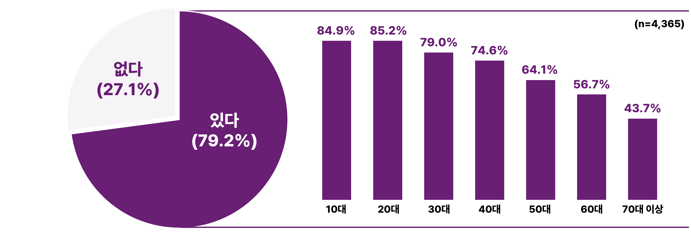
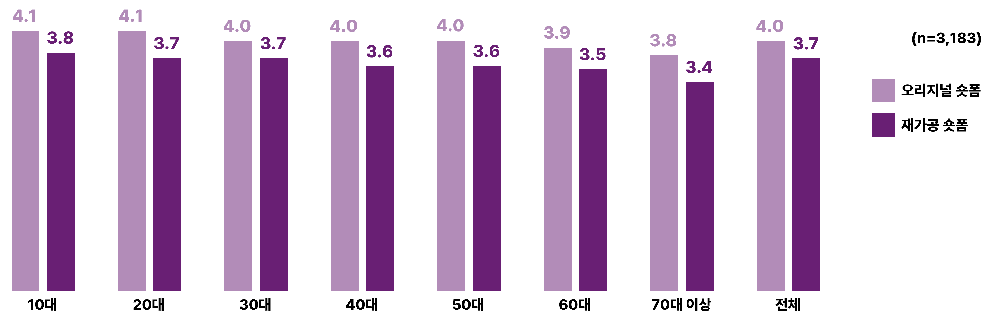
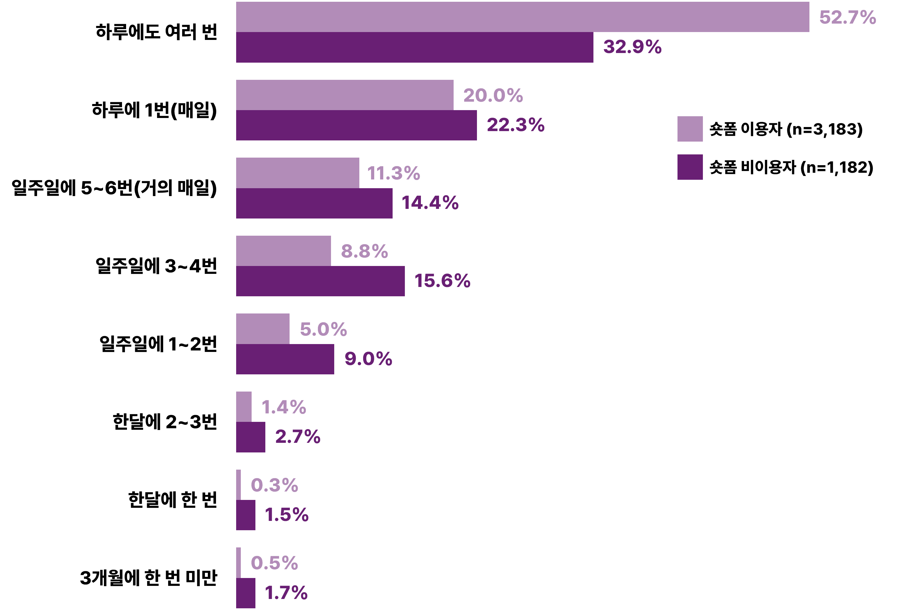

[표 1] 조사 설계
| 구분 | 내용 |
|---|---|
| 조사 지역 | 전국 17개 시도 |
| 조사 대상 | 전국 일반 가구에 거주하는 10세 이상 개인(가구당 1명) |
| 조사 기간 | 2024년 6월 27일 ~ 2024년 8월 27일(약 8주) |
| 조사 방법 | 태블릿을 이용한 일대일 개별면접조사(TAPI) |
| 표본 크기 | 전국 일반가구에 거주하는 10세 이상 국민 5,033명 |
| 표본 추출 | 2022년 통계지리서비스에 기반한 집계구 선정 방식 |
| 가중치 산출 | 2023년 인구주택총조사에 기반 |
| 표본 오차 | 95% 신뢰수준에서 ±2.8%p |
(출처: 한국콘텐츠진흥원(2024). 2024 온라인동영상서비스 이용행태 조사, p.3)
연령대가 낮을수록 숏폼 콘텐츠를 이용한다는 응답 비중이 높지만, 중장년층의 응답도 상당히 높은 편으로 나타나 이른바 숏폼 콘텐츠가 대세임을 확인할 수 있다.
온라인동영상서비스 이용자 중 72%가 최근 1년 이내에 숏폼 콘텐츠 경험이 있다고 응답하여 숏폼 이용률이 매우 높게 나타났다. 특히 연령대가 낮을수록 숏폼 콘텐츠 이용 경험이 있다는 응답 비중이 높았다. 그럼에도 불구하고 50대와 60대의 비중이 각각 64.1%와 56.7%로 응답자의 과반수를 넘고 있으며, 70대 이상의 노년층의 숏폼 콘텐츠 이용 경험 비중도 43.7%로 나타나 중장년층의 숏폼 콘텐츠 이용도 높은 편임을 알 수 있다.
[그림 1] 연령대별 숏폼 콘텐츠 이용 경험

- 오리지널 숏폼 : 처음부터 숏폼으로 제작된 콘텐츠(참여형 챌린지, 1분 컷 뉴스, 숏폼 드라마/예능 등)
- 재가공형 숏폼 : 기존 콘텐츠를 숏폼 형태로 편집한 콘텐츠(영화/드라마/예능 편집본, 개인방송콘텐츠 편집본 등)
전반적으로 숏폼 자체에 대한 선호가 높은 편이지만, 유형별로 세분화해서 보면 기존 콘텐츠를 편집한 숏폼보다는 오리지널을 선호하는 편으로 나타났다. 숏폼 콘텐츠 자체를 특정 장르로 인식하고 있음을 시사한다고 볼 수 있다.
숏폼을 유형별로 구분하여 선호도를 살펴본 결과, 전반적으로 기존 콘텐츠를 편집한 재가공형 숏폼보다는 새롭게 제작한 오리지널 숏폼을 선호하는 것으로 나타났다. 이러한 추세에 대한 연령대별 차이는 없는 것으로 나타났다. 다만, 연령대가 낮아질수록 숏폼에 대한 선호도가 대체로 높아지고 있음을 알 수 있다(P<.001).
[그림 2] 연령대별 숏폼 선호도
5점 척도 기준(1점: 전혀 선호하지 않는다~ 5점: 매우 선호한다)
숏폼 콘텐츠를 이용하는 경우 과반수 이상이 하루에도 여러 번 OTT를 이용하는 것으로 나타나, 숏폼 콘텐츠 이용과 OTT 이용 간 상관관계가 매우 높음을 알 수 있다.
무료 OTT 이용 응답자 중에서 숏폼을 이용한 경험이 있다는 응답자와 숏폼을 이용한 경험이 없다는 응답자 간에 무료 OTT를 얼마나 자주 이용하는지 살펴본 결과, ‘하루에도 여러 번’ 이용한다는 숏폼 이용자가 52.7%인 반면에 숏폼을 이용하지 않는 응답자는 32.9%로 나타나, 숏폼 이용자의 무로 OTT 이용 빈도가 월등하게 높은 것으로 나타났다. 반면에 하루에 1번 이하로 이용하는 것에 대해서는 숏폼을 이용하지 않는 응답자 비중이 더 높은 것으로 나타났다. 즉, 숏폼 이용과 무료 OTT 이용 간에 상관관계가 매우 높음을 알 수 있다.
[그림 3] 숏폼 이용자와 비이용자 간 무료OTT 이용빈도 차이 (단위:%)
미디어 환경이 급격한 속도로 바뀌는 만큼 콘텐츠에 대한 이용자 선호 역시 빠르게 변화하고 있다. 수많은 콘텐츠가 범람하는 플랫폼에서 최근 이용자들은 콘텐츠를 더 빠르게 소비하기 위해 ‘더 짧은 콘텐츠’를 찾고 있는 듯하다. 숏폼이라고 부르는 짧은 콘텐츠가 유통되는 플랫폼(가령, 틱톡, 인스타그램 등)이 많아지는 중에 OTT 이용자를 대상으로 한 숏폼 경험에 대한 조사에서도 숏폼 콘텐츠에 대한 선호가 높게 나온 것은 유의미한 결과를 제공한다고 할 수 있다. 특히 숏폼은 당연히 젊은 세대 중심으로 소비될 것이라는 가정이 무색할 정도로 70대 이상의 노년층 소비도 많다는 점을 유념해 볼만하다. 또한 숏폼 오리지널에 대한 높은 선호는 이제는 단순히 ‘짧은 콘텐츠=숏폼’, ‘숏폼=이용자 제작’이라는 관점에서 탈피해야 함을 시사한다.